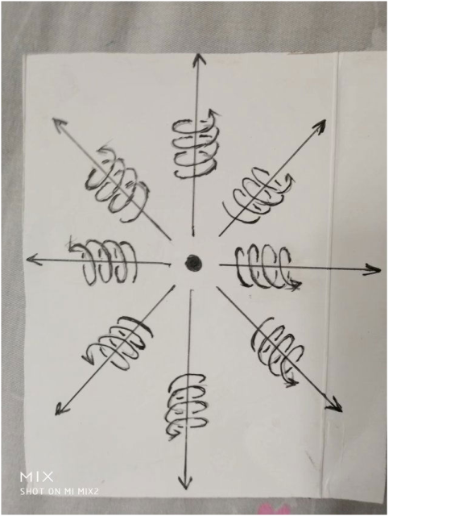

张祥前统一场论简洁版
本文大写字母为矢量。 一，物理的定义： 物理是我们人对几何世界运动变化的描述。几何世界是我们人对物体和空间的描述， 二，质点的定义： 为了描述物体在空间中运动的方便，我们不考虑物体的形状和线长度，把物体理想化，看成一个点，称为质点。 三，宇宙的构成和统一场论基本原理。 宇宙是由质点和它周围空间构成的，不存在第三种与之并存的东西，一切物理现象都是我们对质点运动和空间本身运动的描述。 四，物质的定义： 物质是由物体和空间组成的，物质是不依赖我们观察者的描述而客观存在的。 五，物理概念是怎么产生的？ 除质点和空间外，其余一切物理概念，像位移、时间、场、质量、电荷、速度、光速、力、动量、能量、热、声音、颜色-----都是我们观察者对质点在空间中运动和质点周围空间本身的运动所描述出来的一种性质,其本质都可以用位移来表示。 六，如何描述空间本身的运动？ 我们把三维空间无限分割成许多小块，每一小块叫空间几何点，简称几何点，或者叫空间点。空间点运动所走过的路线叫几何线。描述这些空间点的运动，就可以描述出空间本身的运动。 七，物理学中运动状态的描述不能够脱离观测者。 运动状态来自于我们观察者的描述，是我们观察者对物体在空间某个位置肯定---到否定---再到肯定---再到否定---再到肯定---再到否定----。 如果没有观测者，或者不指明那一个观测者，运动状态是不存在的，静止状态也是不存在的，空间和物体是运动还是静止是不能确定的，描述运动是没有意义的。 八，垂直原理。 物理世界是我们观察者对几何世界的描述，所以，任意一个几何状态总可以找到相对应的物理状态。 几何中的空间三维垂直状态等价于物理上的运动状态，三维垂直状态经过我们人的描述，就是物理上的运动状态。 任何一个处于三维空间垂直状态中的空间点【或者质点】其所在的位置相对于我们观测者一定要运动，并且不断变化的运动方向和走过的轨迹又可以重新构成一个垂直状态。 九，空间为什么是三维的？ 空间的直线运动构成了一维空间，在平面内旋转运动构成了二维空间，旋转又在旋转平面垂直方向延伸【是圆柱状螺旋式】产生了三维空间。 相对于我们观测者，空间时刻以圆柱状螺旋式在运动形成了三维空间。 十，螺旋规律。 宇宙中小到电子、质子，大到地球、月球、太阳、银河系----所有的自由存在于空间中的质点都以螺旋式在运动，包括空间本身也是以圆柱状螺旋式在运动。 十一，平行原理。 物理学中描述的平行状态对应数学中的正比性质。 两个相互平行的物理量，如果可以用线段来表示，一定成正比关系。 十二，几何对称性等价于物理守恒性。 物理学中描述的守恒性等价于几何中的对称性。 一个守恒的物理量，如果能够用线段来表示，在几何坐标上是线对称的。如果可以用面积来表示，在几何坐标上是平面对称的，如果可以用体积来表示，在几何坐标上是立体对称的。 十三，空间可以无限存储信息。 宇宙中任意一处空间可以无限存储信息，或者说可以储存整个宇宙今天、以前、以后所有的信息。 十四， 时间和光速的物理定义。 宇宙任何物体【包括我们人的身体】周围空间都以矢量光速度C、以圆柱状螺旋式、以观察者为中心向四周发散运动，空间这种运动给我们观察者的感觉就是时间。  圆柱状螺旋式运动是由旋转运动加旋转平面垂直方向的直线运动的合成，由于物体静止时候周围空间运动的均匀性，旋转运动会相互抵消为零，只是剩下了以光速C的直线运动。 时间的量与我们观察者周围空间几何点以光速度C【本文大写字母为矢量】走过的路程成正比。 光速反映了时空同一性，即时间的本质就是光速运动空间。光速可以是矢量，矢量光速方向可以变化，模不变，标量光速不变。 十五，三维螺旋时空方程 以相对于我们静止的物质粒子o点为原点建立坐标系oxyz，oxyz系中任意一个空间点p，在时刻t’= 0时刻从o点出发，经过一段时间t后，在t”时刻到达p点所在的位置x,y,z， x,y,z是时间t的函数，由o点指向p点的位置失径【简称位矢】为R（数量为r） 。 R(t)=(x,y,z,t) R(t)= Ct = (a sinωt)J + (bcosωt)L +Vt ω为角速度，J和L是单位矢量。 当o点静止时候， (a sinωt)J = (bcosωt)L = 0，Vt= Ct 十六，时空同一化方程 由于时间与空间点以光速c运动走过的路程成正比，所以： R(t) =ct【r】= xi + yj + zk 如果认为光速在某种情况下可以为矢量，则： R(t) = Ct= xi+ yj + zk r² = c²t²= x²+y² + z² 十七、空间的运动具有波动性。 ∂²r/∂x² + ∂²r/∂y² +∂²r/∂z² = （∂²r/∂t²）/c². ▽² R = （∂²R/∂t²）/ c². 十八、场的定义。 相对于我们观察者，由质点指向周围空间中任意一个空间点的位移矢量随空间位置变化或者随时间变化，这样的空间称为场，也可以叫物理力场。 不同的场是空间位移量关于空间位置的导数或者关于时间的导数所表现出的不同运动程度。 由于场的实质是【相对于我们观察者】空间本身运动的位移量关于时间和空间位置的导数，我们可以说在某一个立体范围内空间的运动量是多少，某一个平面内空间的运动量是多少，某一个曲线内空间运动的运动量是多少。这样，相应的场有三种形式： 1，场在三维立体上的分布。 2，场在二维曲面上的分布。 3，场在一维曲线上的分布。 场论高斯散度定理刻画了三维立体空间里场分布和二维曲面上场分布之间的关系。 斯托克斯定理刻画了场在二维曲面上的分布和场在一维曲线上的分布之间的关系。 场论梯度定理刻画了场在三维立体空间里的分布和场在一维曲线上分布之间的关系。 十九，引力场和质量的几何定义。 设想有一个质点o相对于我们观测者静止，周围空间中任意一个空间点p，在零时刻以矢量光速度C从o点出发，沿某一个方向运动，经历了时间t，在t'时刻到达p后来所在的位置。 我们让点o处于直角坐标系xyz的原点，由o点指向p点的矢径R由前面的时空同一化方程R = C t = x i+ y j + zk给出： 我们以 R = Ct中R的标量长度r为半径，作高斯球面s = 4πr²包围质点o。 我们把高斯球面s = 4πr²均匀的分割成许多小块，我们选择p点所在的一小块矢量面元ΔS【ΔS方向我们用N来表示，其数量为曲面Δs】我们考察发现Δs上有Δn条类似于p的空间点的位移矢量垂直的穿过。 o点在空间p处产生的引力场A【数量为a】: A = - kΔn[R/r]/Δs 物体o点的质量定义方程是: m = （k/g）Δn/Ω 微分式为： m = （k/g） dn /dΩ 上式中d是微分号，n是条数，Ω是立体角。 二十，变化的引力场产生电场。 上式中o点在周围空间产生的引力场A = gk n R/Ωr³中，质量m = k n /Ω随时间变化产生电场 E = gk【d(kn/Ω)/dt】R/Ωr³g =k’【dm/dt】 R/Ωr³ 其中g, k’为常数。 二十一，电荷的几何定义 以上的质点o如果具有电荷q，则： q = 4πε。k’g(dm/dt)= 4πε。k’g [k d(n/Ω)/dt] 其中ε。为介电常数。 注意，电荷是质量的变化形成的，但人们在实践中发现电荷的质量似乎没有变化，这种变化可能是频率极高的周期性变化，如同交流电变化的频率快，人们感觉不到变化。 电荷也是周围空间柱状螺旋式运动造成的，柱状螺旋式包含了旋转运动和旋转平面垂直方向的直线运动。 正电荷周围空间的直线运动部分是以光速、以电荷为中心辐射式发散运动。正电荷周围空间旋转运动部分是逆时针旋转。 负电荷周围空间从无限远处以光速、向电荷收敛运动。负电荷周围空间是顺时针旋转。 二十二，变化的电场产生磁场。 以上的电荷o点相对于我们观察者以速度V运动的时候，可以引起V垂直方向的电场E的变化，变化的部分我们可以叫磁场B ， B = 常数乘以（V× E），统一场论和相对论都认为这个常数为c² ，所以有 B = V× E/c² 二十三、变化的引力场产生核力场。 引力场A = g m R /r³ = g k n R/Ω r³中R =Ct随时间t变化，产生核力场D = gm(dR/dt) /r³ = g mC /r³ 二十四，随时间变化的磁场B产生环绕电场E和环绕引力场 磁场B垂直穿过曲面S，B随时间t变化时候，可以产生沿S边缘的环绕电场E和环绕引力场A【改变磁场方向，可以产生反引力场】。 dB/dt =A×E/c² 二十五，统一场论动量公式 物体静止时候周围空间以矢量光速C运动，因而具有静止动量P’ = m’C，标量为：p’ = m’c 物体以速度V运动的时候，运动动量P = m（C- V） 标量式为： P = mc√（1-v²/c²）= p’ = m’c 二十六、力的定义。 力是物体在空间中运动状态或者物体周围空间本身的运动状态的改变程度。 二十七、统一场论动力学方程。 F = dP/dt = Cdm/dt - Vdm/dt +mdC/dt-mdV/dt (C-V)dm/dt为加质量力， Cdm/dt 是电场力，Vdm/dt是磁场力，mdV/dt牛顿惯性力，也是万有引力，mdC/dt 是核力。 二十八、能量的定义： 能量是物体在空间中【相当于我们观察者】运动程度或者物体周围空间本身运动的运动程度。 二十九、统一场论能量方程 m’c ² = mc ²√（1-v²/c²） m’c²为o点静止能量， o点相对于我们以速度v运动能量为 mc ²√（1-v²/c²） 其中mc² - Ek = m’c ², Ek ≈（1/2）mv²为动能。 三十、光子模型。 光是加速运动的负电荷产生了反引力场，抵消了附近【或者自身】电子的静止质量，电子静止质量消失处于激发状态，静止在空间中【空间时刻光速运动】以光速运动。 电子受到了加质量的力F = C dm/dt（电场力）- V dm/dt（磁场力）的作用而质量消失，处以激发状态已光速运动。C是矢量光速，V是电子的运动速度。 运动光子的动量P = m C m是光子运动质量，C是矢量光速。 运动光子的能量为mc ² 光子模型一种是两个激发电子绕一个轴线旋转运动，又在旋转平面的垂直方向上以光速运动。 一种单个激发电子以柱状螺旋式在运动。 光的粒子性是因为光子是激发电子，波动性是因为光子静止在空间中随空间波动而运动，光的波动性是因为空间本身的波动。 三十二，外星人飞碟飞行原理： 宇宙中任何物体如果你使它的质量变成零，这个物体就一定的突然以光速运动。 三十三，统一场论的主要应用。 1、造出可以光速飞行外星飞碟来 2、可以大规模使用冷焊的人工场 3，可以彻底治疗任何疾病的人工信息场 4、瞬间消失运动----全球运动网 5、全球大规模无导线导电 6、汇聚太阳能接收器 7，无限压缩空间处理信息 8，时空冰箱。 9，虚拟建筑和虚拟人体。 10，场扫描记录人头脑内部意识信息，可以实现人脑和电脑的对接。